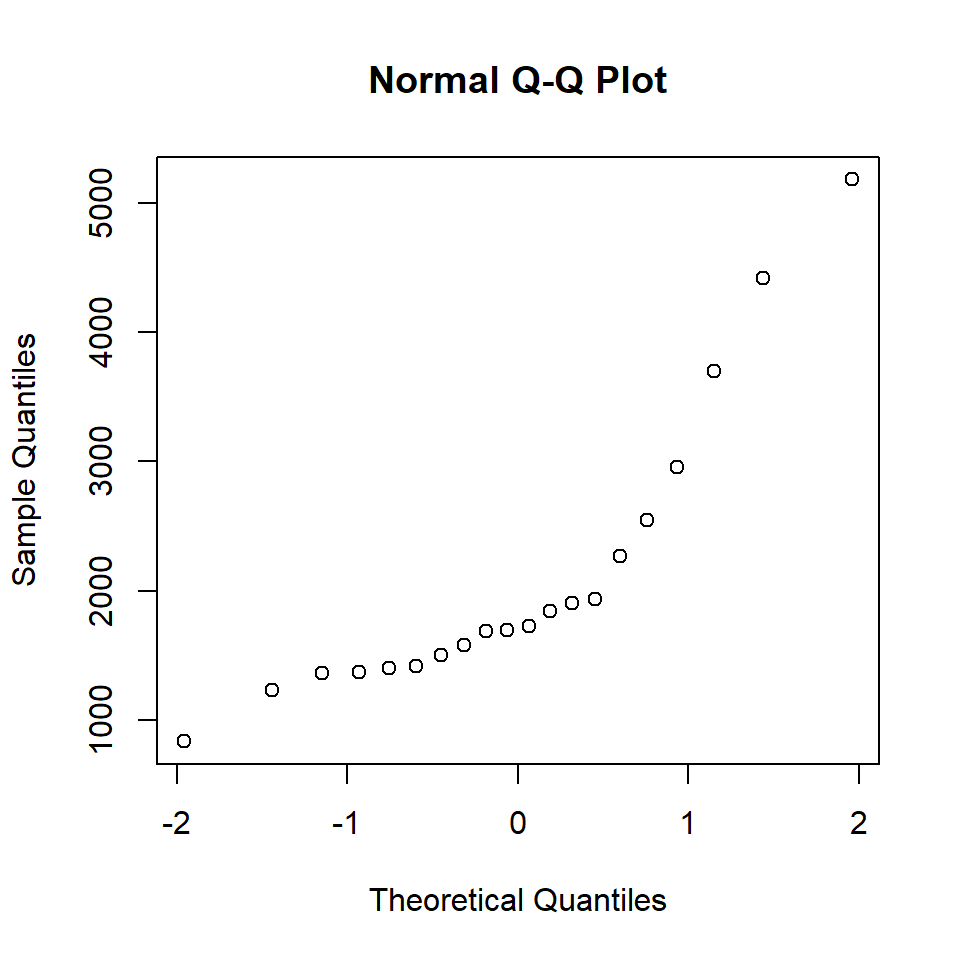
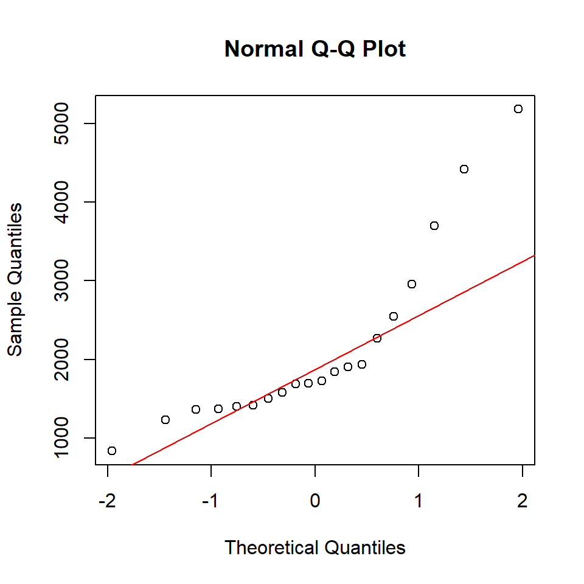
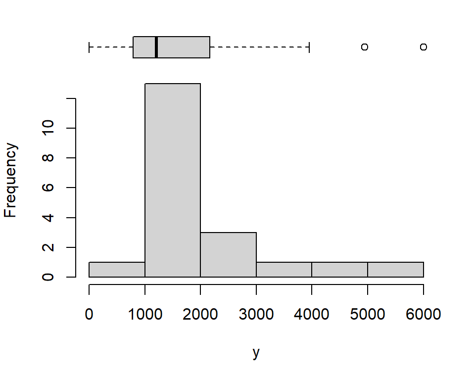
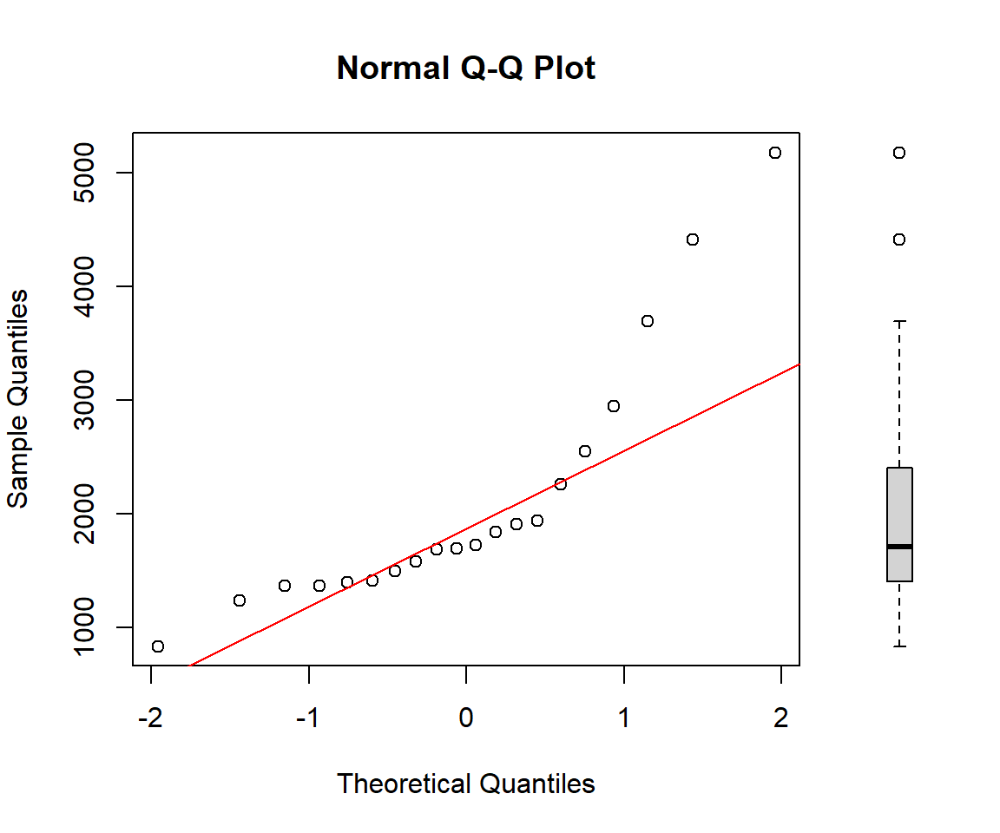

y <- c(2549, 1938, 1698, 1725, 1236, 2953, 1367, 837, 1843, 1369,
1400, 3696, 5179, 1584, 1908, 1415, 4417, 1500, 2265, 1687)Normal Q-Q plot: A step-by-step approach
visualization
A normal Q-Q plot allows you to visually assess whether your data follow a normal distribution.
A normal Q-Q plot is a visualization for assessing whether a given sample is consistent with a normal (Gaussian) distribution. It is constructed by plotting the theoretical quantiles of a standard normal distribution on the horizontal axis against the sample quantiles (i.e., the ordered values of the dataset) on the vertical axis.
Sample quantiles
Let Y be a random variable with \(n\) observations \(y_1, y_2,..., y_n\). First, we sort the observations from smallest to largest: \(y_{(1)} \leq y_{(2)} \leq \cdots \leq y_{(n)}\). Then, for each ordered value \(y_{(i)}\) (sample quantile), we assign a cumulative probability—referred to as plotting position—according to Hazen’s formula \(P_i = \frac{i-0.5}{n}\), where \(i = 1, 2, ..., n\) (Table 1). This convention, originally proposed by Hazen (1914) and later discussed by Cunnane (1978), is often applied for sufficiently large sample sizes (e.g. n > 10).
| Sample quantile \(y_{(i)}\) |
Plotting position \(P_i = \frac{i-0.5}{n}\) |
|---|---|
| \(y_{(1)}\) | \(\frac{0.5}{n}\) |
| \(y_{(2)}\) | \(\frac{1.5}{n}\) |
| \(y_{(3)}\) | \(\frac{2.5}{n}\) |
| \(\vdots\) | \(\vdots\) |
| \(y_{(n)}\) | \(\frac{n-0.5}{n}\) |
Example: Twenty 9-year-old children with age-appropriate development completed a visual matching task on a computer. A target image appeared on the left, and either an identical copy or mirror image appeared on the right. Children pressed one key for matches and another for mirror images. The data represents reaction times (RT) in milliseconds for the 20 children (Table 2).
| 2549 | 1938 | 1698 | 1725 | 1236 | 2953 | 1367 | 837 | 1843 | 1369 |
| 1400 | 3696 | 5179 | 1584 | 1908 | 1415 | 4417 | 1500 | 2265 | 1687 |
Applying Hazen’s rule, we compute the plotting positions (cumulative probability estimates) for each sample quantile, as shown in Table 3.
| Sample quantile \(y_{(i)}\) |
Plotting position \(P_i = (i-0.5)/20\) |
|
|---|---|---|
| 837 | 0.025 | |
| 1236 | 0.075 | |
| 1367 | 0.125 | |
| 1369 | 0.175 | |
| 1400 | 0.225 | |
| 1415 | 0.275 | |
| 1500 | 0.325 | |
| 1584 | 0.375 | |
| 1687 | 0.425 | |
| 1698 | 0.475 | |
| 1725 | 0.525 | |
| 1843 | 0.575 | |
| 1908 | 0.625 | |
| 1938 | 0.675 | |
| 2265 | 0.725 | |
| 2549 | 0.775 | |
| 2953 | 0.825 | |
| 3696 | 0.875 | |
| 4417 | 0.925 | |
| 5179 | 0.975 |
In R
The reaction times are:
We sort the these observations form the smallest to largest:
y_sorted <- sort(y)
y_sorted [1] 837 1236 1367 1369 1400 1415 1500 1584 1687 1698 1725 1843 1908 1938 2265
[16] 2549 2953 3696 4417 5179
Then, we compute the plotting position \(P_i\) for each \(i = 1, 2, ..., n\):
n <- length(y)
i <- seq_len(n)
Pi <- (i - 0.5) / n
Pi [1] 0.025 0.075 0.125 0.175 0.225 0.275 0.325 0.375 0.425 0.475 0.525 0.575
[13] 0.625 0.675 0.725 0.775 0.825 0.875 0.925 0.975
Theoretical quantiles
The theoretical quantiles are the z-values from the standard normal distribution corresponding to the plotting positions. For each cumulative probability \(P_i\), the theoretical quantile \(z_i\) is the value such that: \(P(Z< z_i) = P_i\), where \(Z \sim N(0,1)\) is a standard normal random variable.
The z-value can be calculated using \(z_i = \Phi^{-1}(P_i)\), where \(\Phi^{-1}\) is the inverse cumulative distribution function of the standard normal distribution. As an example, for the first (\(i=1\)) plotting position, we have \(P_1 = 0.025\). Therefore: \(P(Z < z_1) = 0.025 \Rightarrow z_1 = \Phi^{-1}(0.025) \approx -1.96\) (Table 4). This means that 2.5% of the standard normal distribution falls below \(z_1 = -1.96\).
| Plotting position \(P_i\) |
Theoretical quantile \(z_i = \Phi^{-1}(P_i)\) |
|---|---|
| 0.025 | -1.96 |
| 0.075 | -1.44 |
| 0.125 | -1.15 |
| 0.175 | -0.93 |
| 0.225 | -0.76 |
| 0.275 | -0.60 |
| 0.325 | -0.45 |
| 0.375 | -0.32 |
| 0.425 | -0.19 |
| 0.475 | -0.06 |
| 0.525 | 0.06 |
| 0.575 | 0.19 |
| 0.625 | 0.32 |
| 0.675 | 0.45 |
| 0.725 | 0.60 |
| 0.775 | 0.76 |
| 0.825 | 0.93 |
| 0.875 | 1.15 |
| 0.925 | 1.44 |
| 0.975 | 1.96 |
In R
The theoretical quantiles can be calculated using the qnorm() function:
z_i <- qnorm(Pi)
z_i [1] -1.95996398 -1.43953147 -1.15034938 -0.93458929 -0.75541503 -0.59776013
[7] -0.45376219 -0.31863936 -0.18911843 -0.06270678 0.06270678 0.18911843
[13] 0.31863936 0.45376219 0.59776013 0.75541503 0.93458929 1.15034938
[19] 1.43953147 1.95996398The Q-Q plot
The last step is to generate the normal Q-Q plot by plotting the theoretical quantiles (\(z_i\)) on the x-axis against the sample quantiles (\(y_{(i)}\)) on the y-axis using the values from Table 5.
| Theoretical quantile \(z_i\) |
Sample quantile \(y_{(i)}\) |
|---|---|
| -1.96 | 837 |
| -1.44 | 1236 |
| -1.15 | 1367 |
| -0.93 | 1369 |
| -0.76 | 1400 |
| -0.60 | 1415 |
| -0.45 | 1500 |
| -0.32 | 1584 |
| -0.19 | 1687 |
| -0.06 | 1698 |
| 0.06 | 1725 |
| 0.19 | 1843 |
| 0.32 | 1908 |
| 0.45 | 1938 |
| 0.60 | 2265 |
| 0.76 | 2549 |
| 0.93 | 2953 |
| 1.15 | 3696 |
| 1.44 | 4417 |
| 1.96 | 5179 |
# Make QQ plot
plot(z_i, y_sorted,
xlab = "Theoretical Quantiles",
ylab = "Sample Quantiles",
main = "Normal Q-Q Plot",
pch = 1, col = "black")
Adding a reference line (Quartile Method)
The Quartile Method is a robust technique for defining a reference line on a Quantile-Quantile (Q-Q) plot. The line passes through the first quartile (\(Q_1\)) and third quartile (\(Q_3\)) of both the theoretical and sample distributions.
The reference line is \(y = b_o + b_1 z\), where the slope and intercept are calculated as:
\(b_1 = \frac{y_{0.75} - y_{0.25}}{z_{0.75} - z_{0.25}}\)
\(b_0 = y_{0.25} - b_1 \, z_{0.25}\)
Here, \(z_{0.25}\) and \(z_{0.75}\) are the first and third quartiles of the theoretical standard normal distribution, while \(y_{0.25}\) and \(y_{0.75}\) are the corresponding quartiles of the sample.
In R
# Compute quartiles
z25 <- qnorm(0.25)
z75 <- qnorm(0.75)
y25 <- quantile(y, 0.25)
y75<- quantile(y, 0.75)
# Compute line parameters
b1 <- (y75 - y25) / (z75 - z25)
b0 <- y25 - b1 * z25
# Make QQ plot
plot(z_i, y_sorted,
xlab = "Theoretical Quantiles",
ylab = "Sample Quantiles",
main = "Normal Q-Q Plot",
pch = 1, col = "black")
# Add the quartile-based line
abline(b0, b1, col = "red")
The Q–Q plot shows clear deviations from the reference line, particularly in the upper tail, indicating that the data are not normally distributed and exhibit positive skewness. This conclusion is further supported by the histogram and boxplot, which display an asymmetric distribution of reaction times, with a long right tail and two outliers.
layout(mat = matrix(c(1,2), ncol = 1), heights = c(2, 8))
# Top: horizontal boxplot
par(mar = c(0, 4, 1, 2))
boxplot(y, horizontal = TRUE, axes = FALSE,
col = "lightgray", outline = TRUE)
# Bottom: histogram
par(mar = c(5, 4, 0, 2))
hist(y, main = "")
The normal Q–Q plot can be generated using the built-in R functions qqnorm() and qqline().
qqnorm(y)
qqline(y, col = "red")
We can also add a box‑plot for the sample quantiles to the right-side of the Q–Q plot as follows:
# Set up the plotting layout: 2 columns, first column wider
layout(matrix(c(1, 2), nrow = 1), widths = c(3, 0.6))
# Set margins for both plots
par(mar = c(5, 4, 4, 1))
# Create Q-Q plot
qqnorm(y)
qqline(y, col = "red")
# Set margins for boxplot (reduce left margin)
par(mar = c(5, 1, 4, 2))
# Create boxplot on the right
boxplot(y, yaxt = "n", frame = FALSE, ylim = range(y))
References
Cunnane, C. 1978. “Unbiased Plotting Positions — a Review.” Journal of Hydrology 37 (3): 205–22. https://doi.org/10.1016/0022-1694(78)90017-3.
Hazen, A. 1914. “Storage to Be Provided in Impounding Reservoirs for Municipal Water Supply.” Trans. Amer. Soc. Civ. Eng. Pap 1308 (77): 1547–50.